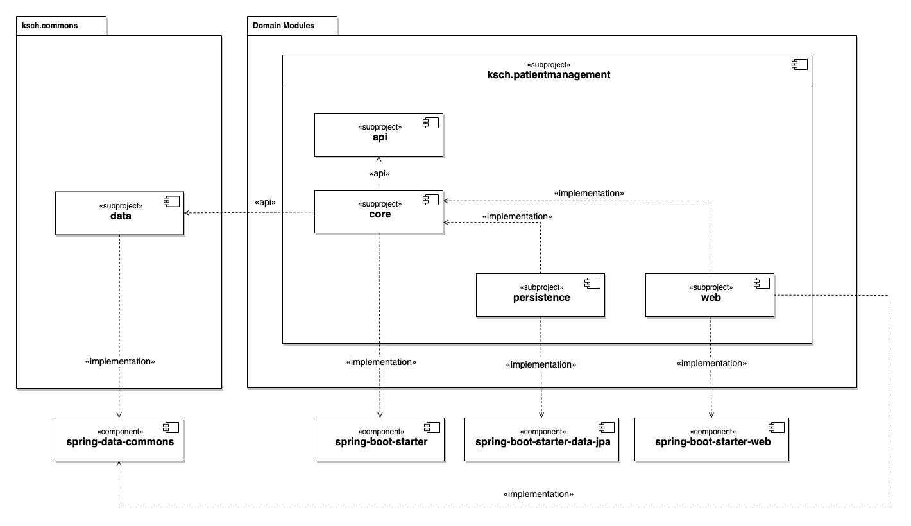

Majestic Monolith
Motivation
Building microservices is often seen as synonym for building modern applications with clear separation of concerns. However, this architectural approach comes with a high complexity in terms of operations and development. Since the KSCH should also have a modern application but simplicity is one of the main quality goals, a different approach is taken: the Majestic Monolith approach. This combines some of the advantages of microservices - like facilitating the usage of Domain-Driven Design and event-based communication - with a simple deployment model. This is achieved with the help of modualization of the code base.
Clean Architecture
Also see
- DDD, Hexagonal, Onion, Clean, CQRS, … How I put it all together | hgraca
- https://medium.com/@mubashirhussain29/the-screaming-architecture-story-08750691291f
- https://levelup.gitconnected.com/what-is-screaming-architecture-f7c327af9bb2
- https://blog.cleancoder.com/uncle-bob/2011/09/30/Screaming-Architecture.html
- https://cleancoders.com/episode/clean-code-episode-67
- Hexagonal : Ports and Adapters
Gradle Multi-Projects
The modularization is build on the dependency configuration levels provided by the tool that is used to build the application. Gradle has the api and implementation dependency configuration levels (there are still a few more). And it enables to create subprojects for a Java project. In other words, projects can be nested with subprojects. If a sub-project A depends on another sub-project B with the api dependency configuration, then A can use all the types defined in B and another sub-project C that depends on A can also use all the types defined in B. On the other hand, if A depends on B with the implementation dependency configuration, then A can still use the typed defined in B, but if C depends on A, it has no access on the types in B.
Also see
- https://docs.gradle.org/current/userguide/declaring_dependencies.html#sec:what-are-dependency-configurations
Domain Modules
At the root of the backend repository are directories with the prefix "ksch.". In the context of the KSCH Workflows system these are referred to as domain modules since they are a digital model of parts of the KSCH. Those modules that are needed for technical reasons can be found in the "commons" and "server" directory.
├── commons
├── ksch.administration
├── ksch.billing
├── ksch.patientmanagement
├── ksch.reporting
├── ksch.scheduling
├── ksch.visit
├── server
Subprojects

Also see
Spring Application Events
Also see
- https://www.youtube.com/watch?v=5YdjBWSGtbE
References
- https://www.youtube.com/watch?v=BOvxJaklcr0
- https://www.monolithic.dev/
- https://robertorodes.com/the-blog/the-majestic-monolith-demystified/
- https://www.youtube.com/watch?v=IXnhHhE_rgM
- Spring Modulith